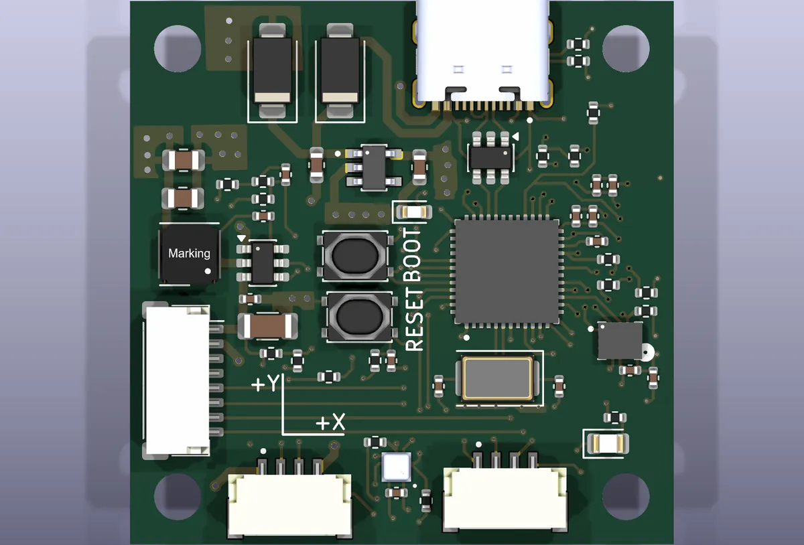
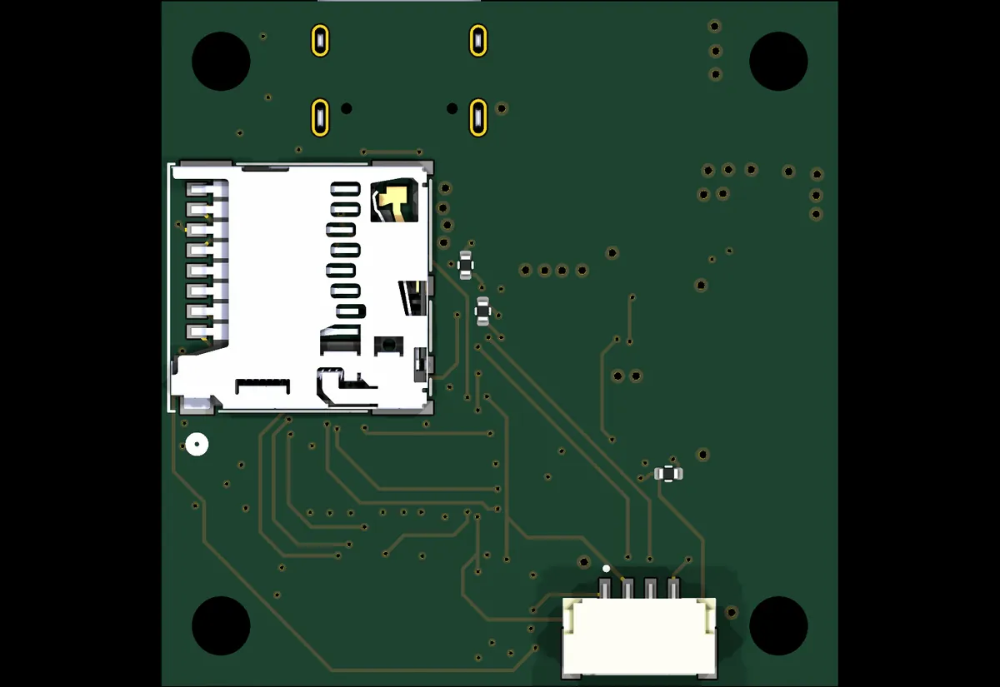

2026 – presentPCB design · Firmware
Custom flight controller PCB & firmware
A drone flight controller designed from a blank schematic: an STM32F411 board with its own power stage, IMU, barometer, radio link and blackbox logging, laid out on four layers in KiCad 9.
Hardware
- Schematic and 4-layer layout for an STM32F411CEU6 (UQFN48) with an 8 MHz HSE crystal, so native USB-C works without a separate USB-UART chip.
- ICM-42688-P IMU on SPI, BMP581 barometer on I²C, ExpressLRS receiver on UART, four ESC outputs and a microSD slot for blackbox logs.
- Power from the battery through a TPS54302 buck converter, then a 3.3 V LDO for a clean MCU and sensor rail. USBLC6-2SC6 ESD protection on the USB lines.
- Physical BOOT and RESET buttons only. Nothing on the USB side can reset the MCU mid-flight.
Firmware, in progress
- FreeRTOS task structure, Kalman-filter sensor fusion and MAVLink telemetry over the ELRS link.
- MCU
- STM32F411CEU6, 512 KB flash, 128 KB RAM
- Sensors
- ICM-42688-P (SPI), BMP581 (I²C)
- Links
- ELRS (UART), native USB-C, SWD
- Outputs
- 4 × ESC (DShot / PWM)
- Power
- TPS54302 buck, 3.3 V LDO
- Tools
- KiCad 9, FreeRTOS

